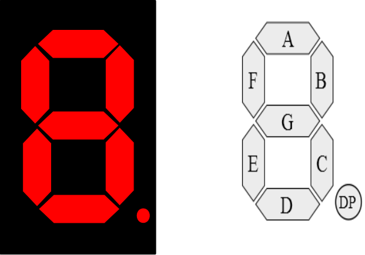
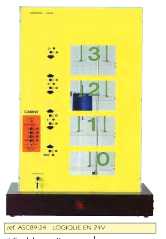

Mes Projets
Découvrez mes réalisations en développement, automatisme, CAO et systèmes embarqués
8 projets trouvés
Système automatique des feux tricolores
Automatisme
Conception 3D avec SolidWorks
CAO

Afficheur 7 segments
Électronique

Système de gestion d'un ascenseur
Automatisme

Simulateur d'un distributeur bancaire
Programmation
Programmation d'un mini jeu vidéo
Programmation

Travaux pratiques universitaires
Programmation
Conception 3D et assemblage mécanique avec SolidWorks
CAO